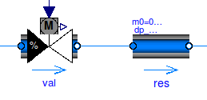
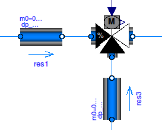
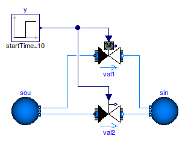
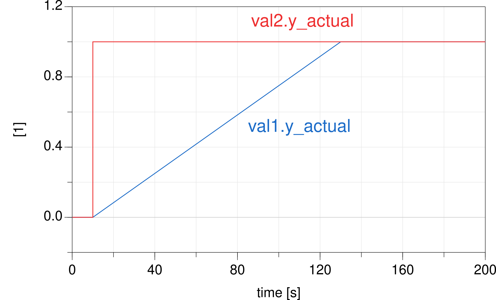

User's Guide
All two and three-way valves have a parameter
dpFixed_nominal. This parameter can be set to a positive (non-zero)
value to model a pressure drop that is in series to the valve.
If dpFixed_nominal=0, then only the valve pressure drop is modeled.
For example, in the schematics below, a valve and a fixed resistance are modeled in series.

This often introduces an additional nonlinear equation. Suppose that in the above model, the parameters for the flow resistance are
val(dpValve_nominal=6000, dpFixed=0, m_flow_nominal=0.1); res(dp_nominal=10000, m_flow_nominal=0.1);
Instead of this arrangement, the model res can be deleted
and the valve configured as
val(dpValve_nominal=6000, dpFixed=10000, m_flow_nominal=0.1);
This yields the same simulation results, but a nonlinear equation can be avoided in some cases. Although lumping the pressure drop of other components into the valve model violates the intent that in component-based modeling, each component should only model its own behavior, having the option of eliminating a nonlinear equation can be worthwhile.
For three way valves, similar parameters exist for the controlled ports of the valve. For example, consider the configuration below.

Suppose the parameters are
val(dpValve_nominal=6000, dpFixed={0, 0}, m_flow_nominal=0.1);
res1(dp_nominal=10000, m_flow_nominal=0.1);
res3(dp_nominal=100, m_flow_nominal=0.1);
An equivalent model could be created by deleting the two resistance models
res1 and res3, and configuring the valve as
val(dpValve_nominal=6000, dpFixed={10000, 100}, m_flow_nominal=0.1);
Valves and air dampers should for numerical reasons have a small leakage flow rate. This leakage l is a non-dimensional number, defined as l=Kv(y=0) ⁄ =Kv(y=1). A typical default value is l=0.0001.
If l=0, models will issue an error message as this can in some situations lead to numerical problems if a flow leg becomes decoupled from a reference pressure source.
This section describes how valves and dampers can be configured to approximate the travel time of an actuator. Such an approximation can also lead to faster simulation because discrete or fast changes in controllers are damped before they influence the flow network.
The valves and dampers in the package
Buildings.Fluid.Actuators
all have a parameter filteredOpening.
This parameter is used as follows:
filteredOpening=false, then the actual valve
or damper position is equal to the input signal y.
filteredOpening=true, then the actual valve or damper position
is computed in such a way that it approximates a valve motor.
This approximation is implemented using a 2nd order low-pass filter.
The filter has a parameter riseTime, which by default is
set to 120 seconds.
The rise time is the time required to reach 99.6% of the opening.
Using a filter often leads to a more robust simulation,
because a step change
in the input signal is "smoothened" by the filter, and
hence the flow network is only exposed to a continuously differentiable change
in the input signal.
However, if the filter is part of a closed loop control, then the transient
response gets changed. Therefore, if the parameter filteredOpening
is changed, control gains may need to be retuned.
For example, suppose there is a closed loop control with a PI-controller
Buildings.Controls.Continuous.LimPID
and a valve, configured with filteredOpening=true and riseTime=120 seconds.
Assume that the transient response of the other dynamic elements in the control loop is fast
compared to the rise time of the filter.
Then, a proportional gain of k=0.1 and an integrator time constant of
Ti=120 seconds often yields satisfactory closed loop control performance.
These values may need to be changed for different applications as they are also a function
of the loop gain.
If the control loop shows oscillatory behavior, then reduce k and/or increase Ti.
If the control loop reacts too slow, do the opposite.
We will now show how the parameter riseTime affects the actual position of a
control valve.
The figure below shows a model with two control valves.
The valve val1 is configured with filteredOpening=true
and a rise time riseTime=120 seconds.
The grey motor symbol above the control valve val1
indicates that filteredOpening=true.

If these valves both have a step input signal at 10 seconds, then the actual opening of the valves are as follows:

Thus, in the valve val1, the mass flow rate will slowly increase,
whereas in val2, the mass flow rate changes instantaneously.
If filteredOpening=true, then the parameter
y_start can be used to set the initial position of the
actuator, and the parameter
init can be used to configure how the position
should be initialized.
For most applications, the default values are appropriate. Although adding a filter increases the number of equations, it can reduce computing time because the equations are easier to solve when a controller switches.
The model Buildings.Fluid.Actuators.Motors.IdealMotor models a motor with hysteresis. It is more detailed than the above approximation. However, it can significantly increase computing time because it generates a state event whenever the valve position changes.
Extends from Modelica.Icons.Information (Icon for general information packages).